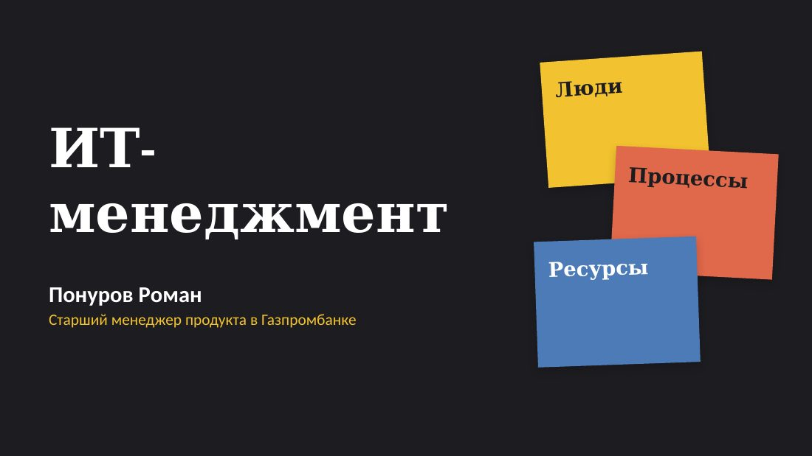

Старший менеджер продукта в Газпромбанке
Роман Понуров
Запускаю продукты с нуля: фудтех, телеком, финтех
Читаю курс «ИТ-менеджмент» в университете
Аспирант РАНХиГС: ИИ в управлении компанией
4 продукта запустил с нуля, два — как сооснователь
+103% выручки после перезапуска e-commerce
Пишу о продукте, ИИ и преподавании
Посты о запусках, кейсах и о том, чему я учусь и учу других. Все темы — на странице тегов.
-

Читаю курс по ИТ-менеджменту в университете Этой осенью я веду курс «ИТ-менеджмент» для студентов первого курса: семь лекций по вторникам, с 13 октября по 24 ноября. Первая лекция уже прошла. - Прошёл акселератор «Академия инноваторов» с проектом bolz С июня по сентябрь 2025 года я прошёл акселератор «Академия инноваторов» Московского инновационного кластера со своим продуктом bolz — агрегатором шеринг-сервисов.
- Что показала независимая оценка менеджеров продукта в МТС В апреле 2022 года МТС провела независимую оценку менеджеров продукта: тестирование делала компания Assessty. В это время я развивал MTS ID — единую авторизацию для продуктов МТС.